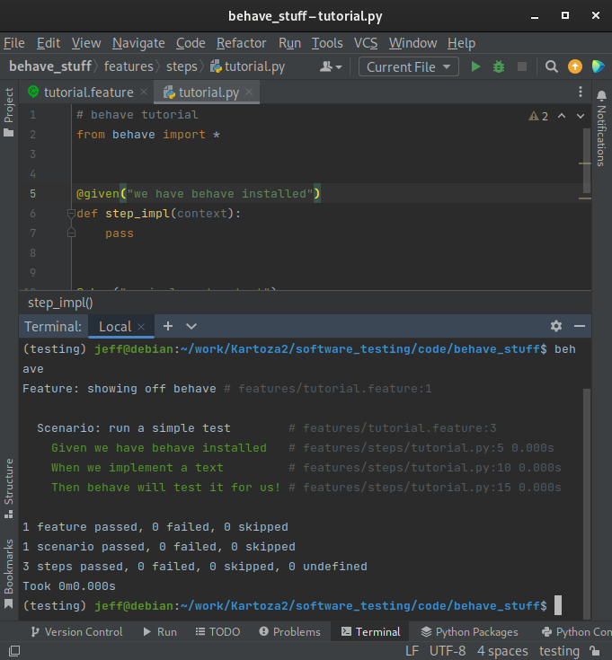
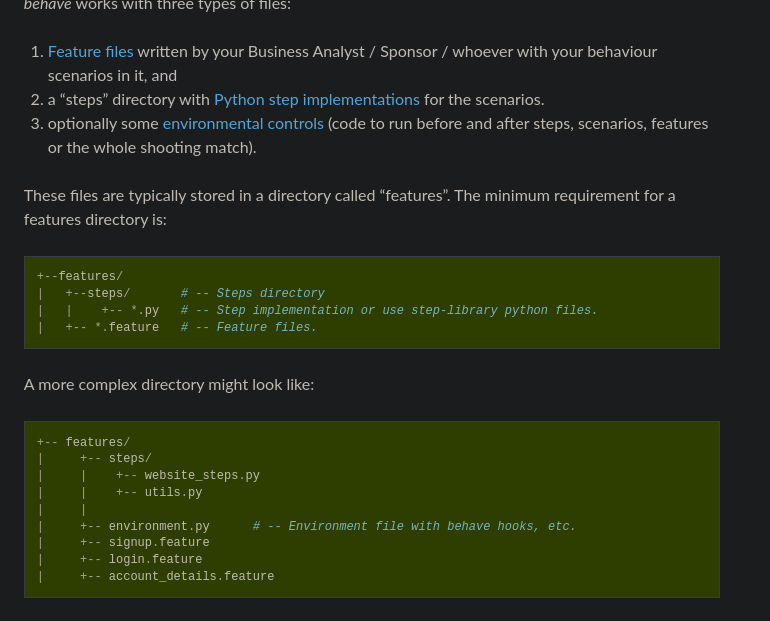
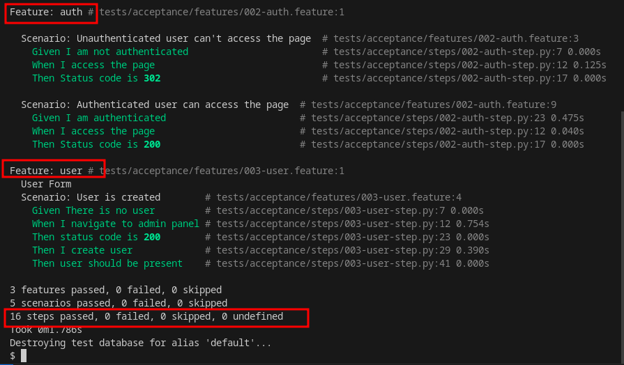

Behaviour driven development
Introduction
Behavioural-driven development (BDD) is an agile software development technique. BDD encourages the collaboration between the developers and the client. BDD focuses more on clear understanding of software behaviour through discussion with the client.
It extends TDD by writing test cases in a natural language that non-programmers can read. Behavior-driven developers use their native language in combination with the ubiquitous language of domain-driven design to describe the purpose and benefit of their code. This allows the developers to focus on why the code should be created, and minimizes translation between the technical language in which the code is written and the domain language spoken by the business, users, stakeholders, project management, etc. Source, BDD philosophy.
The developer should break customer requirements into simple examples using Gherkin. Gherkin is a business-readable, domain-specific language created for behaviour descriptions. Gherkin communicates to the developer in a human-like language.
Behave is a tool implemented in python to make all this possible.
Playwright-BDD
playwright-bdd is a nodejs package that allows you to work on behaviour-driven development.
It runs the bdd tests using playwright runner.
playwright-bdd combines the power of CucumberJS and playwright.
Installation
Create a directory playwright-bdd.
To install playwright-bdd using npm:
@playwright/test and @cucumber/cucumber as a peer dependencies.
For brand-new projects they will be installed automatically with playwright-bdd.
For existing projects you may need to update them to the latest versions:
To install playwright browsers:
Setting up
The examples are based off sawps project.
In the playwright directory, create two directories:
- features: Contains
*.featurefiles that use the Gherkin syntax - steps: Contains
*.spec.tsfiles that contains the steps taken when testing the features.
Copy the following documents:
# map-filter.feature
Feature: Map filter
Map filter
Scenario: Map filter
Given I am on the project landing page "http://localhost:61100/"
When I click on "Explore" button
Then I should be redirected to the "**/map" view
Then I should see the map canvas on the page
When I configure filters
Then I should see data on the map and legend should be visible
// map-filter.spec.ts
import { expect } from '@playwright/test';
import { createBdd } from 'playwright-bdd';
const { Given, When, Then } = createBdd();
/* Scenario: Check Explore page */
Given('I am on the project landing page {string}', async ({ page }, url) => {
await page.goto(url);
await page.getByRole('link', { name: "LOGIN" }).click();
await page.getByPlaceholder('E-mail address').fill('admin@example.com');
await page.getByPlaceholder('Password').fill('admin');
await page.getByRole('button', { name: 'LOGIN' }).click();
});
When('I click on {string} button', async ({ page }, name) => {
await page.getByRole('link', { name }).first().click();
});
Then('I should be redirected to the {string} view', async ({ page }, url) => {
//await expect(page).toHaveTitle(new RegExp(keyword));
await page.waitForURL(url);
});
Then('I should see the map canvas on the page', async ({ page },) => {
await expect(page.getByRole('tab', { name: 'MAP' })).toBeVisible();
// Map canvas is visible
const map = 'canvas.maplibregl-canvas.mapboxgl-canvas';
await expect(page.locator(map)).toBeVisible();
});
When('I configure filters', async ({ page },) => {
await expect(page.getByRole('tab', { name: 'MAP' })).toBeVisible();
// Map canvas is visible
await page.locator('#combo-box-demo').click();
await page.getByRole('option', { name: 'Panthera leo' }).click();
await page.locator('nav').filter({ hasText: 'Organisation selected' }).getByLabel('Open').click();
await page.getByRole('button', { name: 'Close' }).click();
});
Then('I should see data on the map and legend should be visible', async ({ page },) => {
await expect(page.getByText('Panthera leo population (2024)')).toBeVisible();
// Map canvas is visible
const map = 'canvas.maplibregl-canvas.mapboxgl-canvas';
await expect(page.locator(map)).toBeVisible();
});
Create a playwright.config.ts file.
This file will contain the playwright configurations necessary for the project.
Copy the following contents to the file:
import { defineConfig, devices } from '@playwright/test';
import { defineBddConfig } from 'playwright-bdd';
/**
* Read environment variables from file.
* https://github.com/motdotla/dotenv
*/
// require('dotenv').config();
/**
* See https://playwright.dev/docs/test-configuration.
*/
/* Test directory with features and steps */
const testDir = defineBddConfig({
paths: ['features/*.feature'],
require: ['steps/*.ts'],
verbose: true,
});
export default defineConfig({
testDir,
/* timeout */
timeout: 30 * 1000,
/* Run tests in files in parallel */
fullyParallel: true,
/* Fail the build on CI if you accidentally left test.only in the source code. */
forbidOnly: !!process.env.CI,
/* Retry on CI only */
retries: process.env.CI ? 2 : 0,
/* Opt out of parallel tests on CI. */
workers: process.env.CI ? 1 : undefined,
/* Reporter to use. See https://playwright.dev/docs/test-reporters */
reporter: 'html',
/* Shared settings for all the projects below. See https://playwright.dev/docs/api/class-testoptions. */
use: {
/* Base URL to use in actions like `await page.goto('/')`. */
baseURL: 'http://localhost:61100/',
/* Collect trace when retrying the failed test. See https://playwright.dev/docs/trace-viewer */
trace: 'on-first-retry',
},
/* Configure projects for major browsers */
projects: [
//{ name: 'setup', testMatch: /.*\.setup\.ts/ },
{
name: 'chromium',
use: { ...devices['Desktop Chrome'],
// Use prepared auth state.
},
},
});
Create a .gitignore file at the root directory of the playwright-bdd project.
Running tests
To run tests on your terminal;
The first commandnpx bddgen generates the tests from the feature and step files.
npx playwright test runs the test using the playwright runner.
For more on playwright-bdd, review the docs here.
behave
Installation
Behave installation:
-
Created a new conda environment:
-
Installed
behaveusing pip
Gherkin Feature Testing language
Features are made up of scenarios:
An example:
- Make
featuresdirectory - Make
tutorial.featurefile inside features directory -
Copy sample feature scenarios to
tutorial.feature: -
Make a new directory
features/stepsand createtutorial.pyfile. -
Copy below code:
-
Run code in the directory:
-
The results would be as follows:

For a more comprehensive tutorial, kindly look at behave tutorial
- NOTE: Testing layout.

Django test integration
- There are two projects that integrate django and behave:
behave_django
Setting up behave_django
To install: pip install behave_django
Add behave_django to INSTALLED_APPS in core.settings.dev module.
Under django_project directory:
- Create
testsdirectory andbehave.inifile -
In the
behave.inifile, add the following: -
Under
tests, createacceptancedirectory: -
Under
acceptancecreate two directories:featuresandsteps - In the
acceptancedirectory create anenvironment.pyfile""" behave environment module """ # Customise according to project def before_feature(context, feature): if feature.name == 'Fixture loading': context.fixtures = ['behave-fixtures.json'] elif feature.name == 'Fixture loading with decorator': # Including empty fixture to test that #92 is fixed context.fixtures = ['empty-fixture.json'] def before_scenario(context, scenario): if scenario.name == 'Load fixtures for this scenario and feature': context.fixtures.append('behave-second-fixture.json') if scenario.name == 'Load fixtures then reset sequences': context.fixtures.append('behave-second-fixture.json') context.reset_sequences = True if scenario.name == 'Load fixtures with databases option': context.databases = '__all__' def django_ready(context): context.django = True
Creating bdd tests
Add *.feature file in features directory.
Feature files use the Gherkin syntax.
Feature: auth
Scenario: Unauthenticated user can't access the page
Given I am not authenticated
When I access the page
Then Status code is 302
Scenario: Authenticated user can access the page
Given I am authenticated
When I access the page
Then Status code is 200
Add *.py file in steps directory.
from behave import given, when, then, use_step_matcher
from django.contrib.auth.models import User
use_step_matcher("re")
@given("I am not authenticated")
def not_auth(context):
pass
@when("I access the page")
def access_page(context):
context.response = context.test.client.get("/map/")
@then("Status code is (?P<status>\d+)")
def status_code(context, status):
code = context.response.status_code
assert code == int(status), "{0} != {1}".format(code, status)
@given("I am authenticated")
def auth_success(context):
user = User.objects.create_superuser("admin", "admin@example.com", "admin")
context.test.client.force_login(user)
Running tests
First collect static: python manage.py collectstatic
To run: python manage.py behave
Results:
